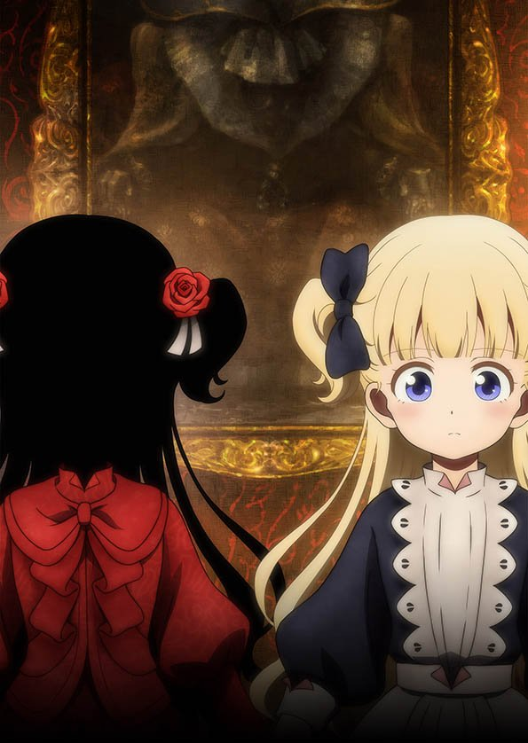
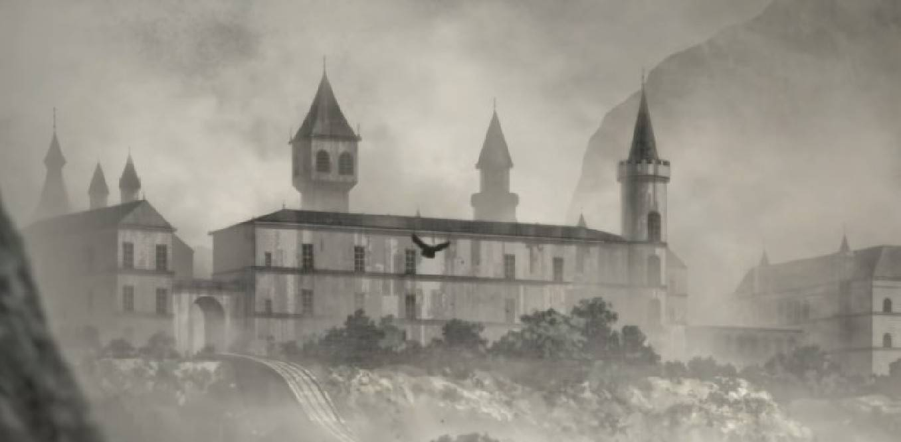
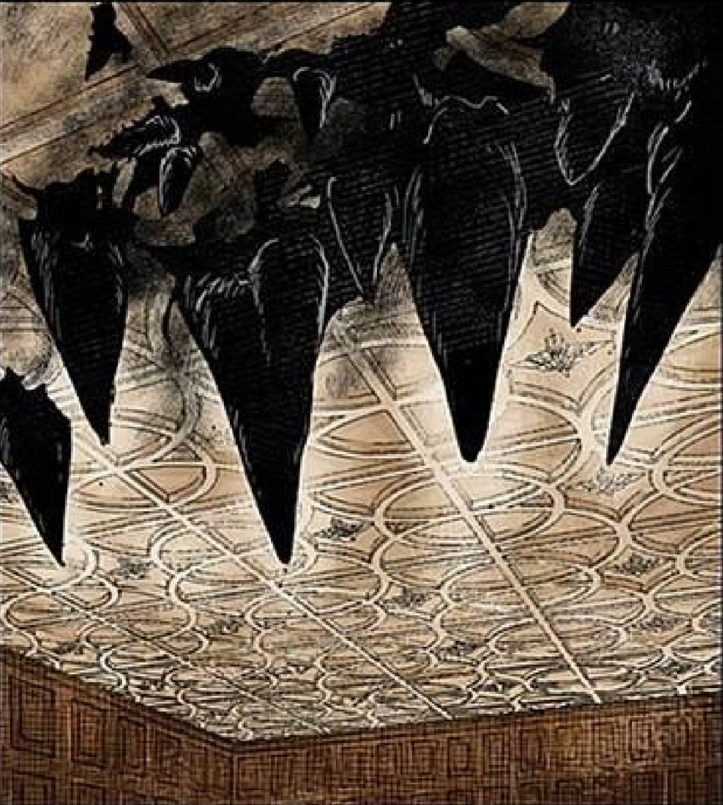
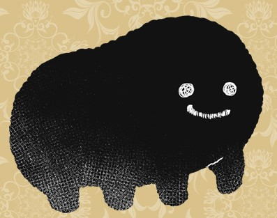
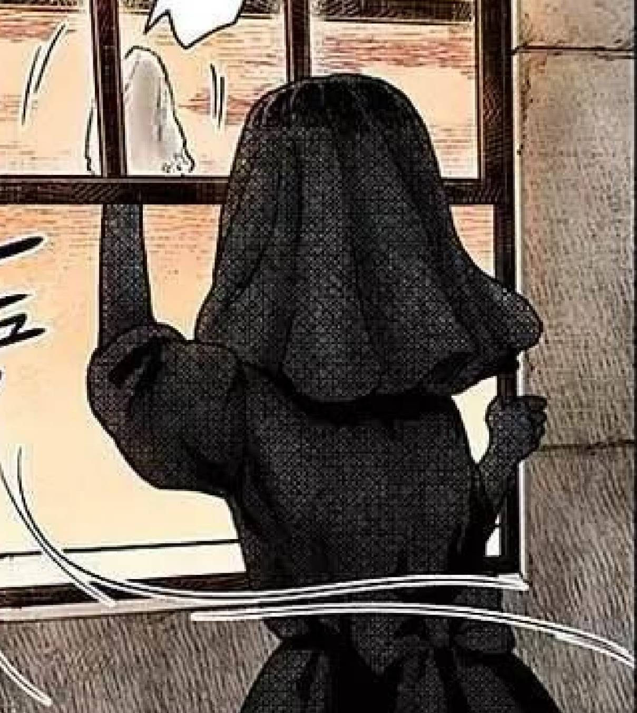
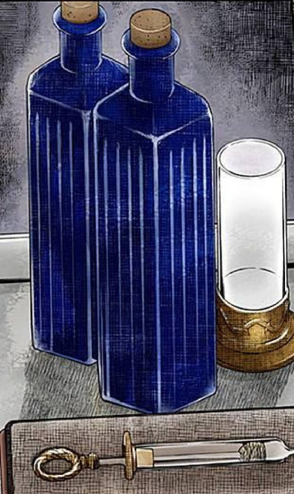
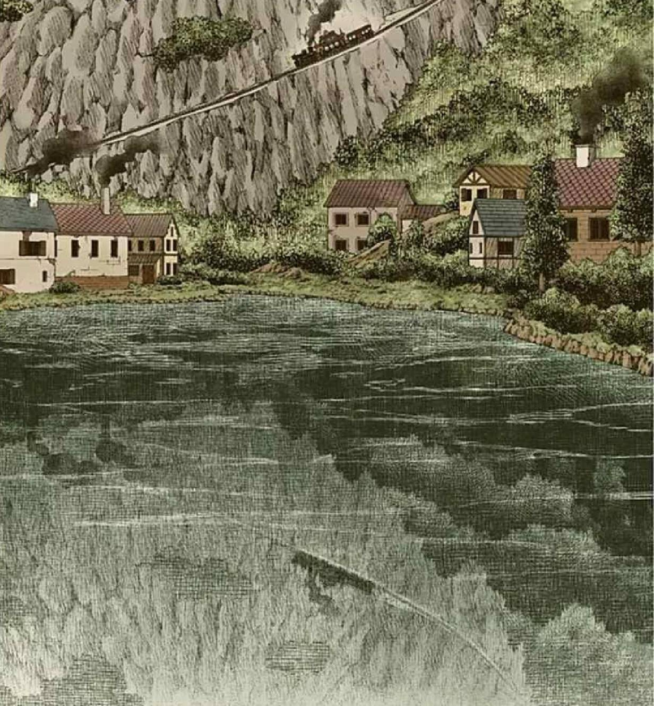
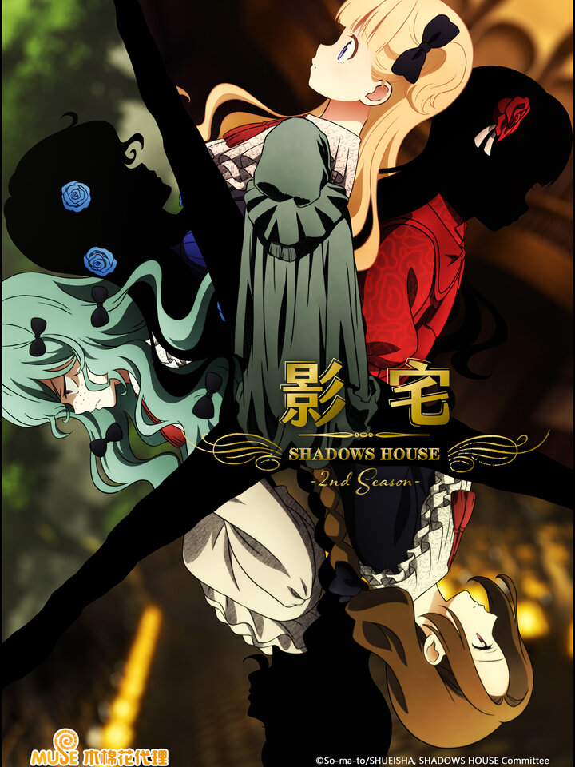
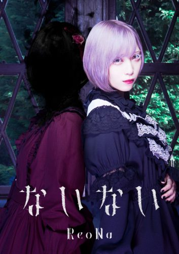

主要人物
凱特（ケイト，聲：鬼頭明里）
影家人，艾蜜莉可的主人。穿著紅色洋裝並戴著紅玫瑰髮夾。個性聰明理性，會為了將要發生的事情進行細密的規劃，缺點則是缺乏自信或是會一時衝動而失去冷靜，無法應付計畫之外的事物。 影宅之中少數會把自己的活人偶當成另一個個體而不是自己一部分的影家人。知道影宅的真相，認定影宅的做法是錯的，決心反抗偉大的爺爺。找出亡靈騷動的犯人後得到戴星組的信任並晉升為班長。興趣是在自己的房間內讀書與製作黑灰娃娃。黑灰量多，黑灰能力為操縱自身產生的黑灰來進行精密動作，例如變出鑰匙開鎖，或是做為子彈攻擊遠方的物體。
艾蜜莉可（エミリコ，聲：篠原侑(日本)）
活人偶，凱特的女僕。有著金色的頭髮並綁著雙馬尾，與其他女性活人偶一樣穿著女僕的服裝。個性開朗、充滿自信且活力充沛，在危險時候常會突發奇想想出他人也想不出的方法來解決問題，缺點則是做事少一根筋常會做出其他人無法理解的舉動，因此被其他人稱為傻妹（花田）。社交能力很強，能讓周圍的人喜歡她並團結一致。 喜愛主人凱特並努力幫助著她，已被凱特告知影宅的真相，主僕決定一起推翻影宅。興趣是縫紉、觀鳥與吃麵包。擁有其他活人偶所沒有的旺盛體力與反應能力，因此被研究班的人稱為超級活人偶。更多暴雷資訊
其他同期主僕
名詞介紹
影宅（シャドー家）
無人訪問的巨大神秘別墅，為影家人與活人偶生活的地方，共分為兩棟樓，分別是兒童樓與成人樓，兒童受到邀請就會前往成人樓與其他大人共住，談論前往成人樓的人被兒童們視為禁忌，且成年的影家人也很少會回到兒童樓。在影宅的附近有許多村莊，每隔幾個月影宅會派出黑灰火車到村莊，並使用黑灰與村民們交易生活物資與製造活人偶所需的材料。
前身是貴族鏡家的住宅「鏡宅」，建立於黑塵島上。
影家人（シャドー）
假裝自己是貴族並生活在影宅中的寄生型妖精「影精」（Morph），身體是完全黑色的，為了辨識彼此與交流所以需要活人偶來表現自己的表情。身上總是會冒出黑灰，這些黑灰加工後能夠成為比煤炭還要更有效率的能源，能夠與周邊的村莊進行交易並賺取大量資源，也因此影家人基本上非常富有。僅有成年的影家人知道影家人並非人類的真相。
影家人本身具有個性，但會反映出活人偶的部分特質。
偉大的爺爺構築了一個流程，使影家人能夠獲得人格。
第一階段：讓妖精看到活人偶並模仿活人偶的模樣，在這個過程中成為影家人的妖精多數會喪失成為影家人前的記憶。
第二階段：妖精和活人偶一起生活，並依此建立人格。
第三階段：妖精和活人偶合二為一，妖精奪取活人偶的臉，使得妖精成為完全的存在。
活人偶（生き人形）
由影宅所創造出來的精密人偶，主要任務是維持影宅的環境與作為影家人溝通的橋樑。一般來說一個活人偶會有一個對應的影家人。因為需要觀察影家人的個性，所以被允許擁有自我意識，但是如果所屬的影家人死亡或是表現出過於強大的反抗意志就會被清除記憶並被改造成無面人偶。
活人偶的材料事實上是活生生的人類小孩，也因此尚恩推論影家人的名字是對應的活人偶作為人類時候的名字。
影宅附近村莊所設立的學校課程皆是在培養活人偶的能力，且免費入學。
黑灰（すす）
影家人散發出的黑色灰塵，當影家人不安或憤怒時會有所噴發。影家人每天都會噴出黑灰並弄髒環境，使得活人偶必須經常打掃。黑灰遇水便會消散。
黑灰量大的影家人不容易被處置。
黑灰可煉為影宅的能源「黑灰炭」，也可以用來洗腦，尤其是偉大的爺爺的黑灰洗腦能力極強。影宅附近的小鎮雖然不是偉大的爺爺的黑灰，但小鎮乃至整個黑塵島的居民在長期受黑灰污染後，已經無法正常思考，使得居民欣然接受小孩被影宅綁走的事實。
黑灰冰柱（すすつらら）
黑灰量大的影家人所能造成的現象，能在天花板上將黑灰凝結成冰柱狀。
黑灰能力（すす能力）
部分影家人擁有操作黑灰的能力，能夠藉此施展許多常人做不到的事物，從黑灰塑造成武器來進行攻擊到使用黑灰侵入他人身體來進行控制等。根據影宅的慣例，擁有黑灰能力的人必須保密，不能輕易向其他影家人透露關於黑灰能力的各種資訊。必須要擁有黑灰能力才能成為隊長並成功合二為一。

黏著物（こびりつき）
具有惡意的黑灰集合體，模樣像是幼貓，清理較為困難，同時不能像一般的黑灰煉成「黑灰炭」。
亡靈（亡霊）
黏著物的最大量、最危險集合體。

無面人偶（顔の見えない人形）
由失去影家人的活人偶並飲用過特殊咖啡改造而來的人類，沒有自我意志，不會說話也不會對任務以外的事情有反應。穿著的服裝實際上是喪服，被認為是在對已經死亡的影家人哀弔。
喜樂會（喜びの会）
大掃除後的活人偶集會。活人偶會喝下摻有偉大的爺爺黑灰的特殊咖啡，藉此達到洗腦效果。
特殊咖啡（おじい様のすす入り珈琲）
有偉大的爺爺黑灰的咖啡。在影家人通過見面式後，定期給活人偶飲用。黑灰洗腦活人偶後再讓活人偶影響影家人，以達到控制影家人的目的。
公開亮相（お披露目）
影家人的成人儀式，考驗影家人和活人偶之間契合程度和影家人的穩定度以決定能否成為正式的影家人。失敗的影家人會被抓到能源室到死前都為影宅產出黑灰，而失敗的活人偶會成為無面人偶被影宅重覆利用。
黑灰管理設施（すす管理施設）
通稱「黑灰管」(すす管)。把兒童的黑灰收集並送往大人居住樓的措施，通常為活人偶輪班清掃。但是長時間打掃黑灰管的活人偶最終會壞掉，因此打掃黑灰管對影家人來說是最恥辱的懲罰。
婚姻制度（婚姻制度）
影家成年人可直接結婚，相對兒童只能申請，若是兒童訂婚的其中一方被處置便會貽笑大方，所以被影家成年人認為是無用的制度。與此同時，婚姻也是在影宅提升地位的一種方法。
合二為一（一體化）
影家人在受到邀請後的儀式，此階段中影家人會奪取活人偶的身體，使得活人偶必定死亡，但是轉變過程中影家人也有可能因不堪負荷而死亡。只有具有黑灰能力的影家人才有可能通過儀式。托馬斯為了不讓芭芭拉長大成人，故意合二為一的前提條件設下「活人偶臉上不得有傷」。

鏡邊村（ミラーサイド）
影宅的領地之一，尚恩、露、利奇和拉姆出身的村莊。村莊負責製造影家人所穿的貴族衣著。
黑塵島（すす島）
影家人所佔領的島嶼，觀光業興盛。島上居民長期被黑灰所洗腦，而外來觀光的遊客也會被黑灰控制而移居此島。為了吸引更多人類移居，兒童的教育完全免費。島上有許多隱藏身分、派遣於此的影家人。
鏡宅（ミラーハウス）
影宅的前身，60年前存在的貴族宅邸，對誰都開放的理想場所，但在某天被不明人士利用影精篡奪。
電視動畫
改編電視動畫第1季於2021年4月10日至7月3日期間於TOKYO MX、BS11、群馬電視台、栃木電視台等平台播映，動畫製作公司為CloverWorks。在首播前的3月27日，於以上電視台播映特備節目，出席嘉賓包括鬼頭明里、篠原侑、佐倉綾音、酒井廣大、川島零士和下地紫野，主持人是岩井勇氣（原市）。 動畫第1季最後一集加入了漫畫單行本第8卷的元素，劇情上接到第4卷後半。第2季將於2022年7月首播。
宣傳、消息公佈
2020年10月16日，宣布將會獲改編為電視動畫。10月29日，於當日發售的《週刊Young Jump》2020年第48號公布首張預告視覺圖，並同日開設官方網站。12月20日，宣布定於2021年播映，並公布主要製作人員以及兩名主角的聲優。2021年1月7日，公布播出時間為2021年4月。1月21日，公布露薏絲／露由佐倉綾音配音。1月28日，公布喬恩／尚恩由酒井廣大配音。2月4日，公布帕利克／利奇由川島零士配音。2月11日，公布夏麗／拉姆由下地紫野配音。公佈新角色聲優時，會同時公開那對角色的角色視覺圖。2月18日，公開凱特／艾蜜莉可的角色視覺圖。3月8日，公開主視覺圖和片尾曲詳情。3月18日，公開正式宣傳影片。3月27日，公開一段「墨繪PV」，內容為墨繪師御歌頭以水墨畫形式繪畫一幅《影宅》插圖。
另外，娛樂新聞網站Natalie在2021年3月18日刊登了本作書迷、演員高杉真宙的訪談。他曾多次在電視節目上推薦本作，在Natalie的訪談稱這是他在2020年看過的漫畫中最好看的。高杉亦得以優先觀看第1集，並在訪談中發表觀後感。
2021年9月11日，在網路節目上公佈將製作第2季的消息，並公開一段特報宣傳片。2022年1月5日晚上8時（UTC+9），在Aniplex YouTube頻道上播放特備節目。同日宣佈第2季將於2022年7月首播。3月27日，在AnimeJapan2022的Aniplex攤位舉辦舞台活動，出席聲優包括鬼頭明里、篠原侑和酒井廣大。
主題曲
第1期
片頭曲「a hollow shadow」
作曲、編曲：末廣健一郎
片尾曲「ないない」
作詞：ハヤシケイ、毛蟹，作曲：毛蟹，編曲：小松一也，主唱：ReoNa
第2期
片頭曲「Shall We Dance?」（シャル・ウィ・ダンス？） 作詞：傘村トータ，作曲：毛蟹，編曲：小松一也，主唱：ReoNa
作詞：傘村トータ，作曲：毛蟹，編曲：小松一也，主唱：ReoNa
片尾曲「Masquerade」
作曲、編曲：末廣健一郎，作詞、主唱：ClariS